L'app qui transforme une photo de ton frigo en 3 recettes anti-gaspi, en quelques secondes.
Projet d'école · Novembre 2026 ·
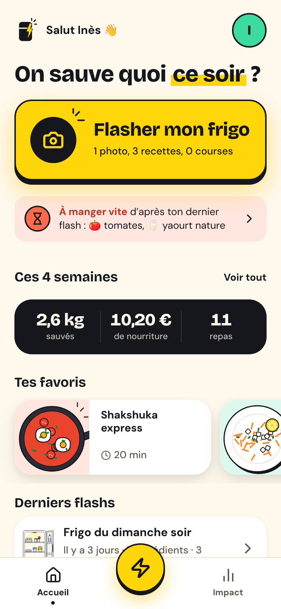
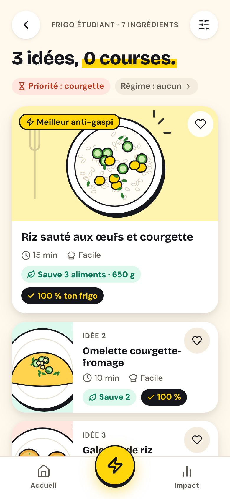
Le pitch
Le gaspillage commence par une question : je mange quoi ce soir ? FrigoFlash y répond en une photo.
A
01
Le problème
Chiffres, insight, personas
B
02
L'app
Parcours, démo, robustesse
B
03
La marque
Logo, couleurs, typo, illustrations
A
04
Le business
Concurrence, modèle, projections
Les deux
05
Le making-of
Comment l'IA a tout produit
01
01 Le problème
On jette ce qu'on a déjà acheté.
Pas par négligence : faute d'idée, au mauvais moment.
Le constat
Chaque Français jette 20 à 30 kg de nourriture comestible par an.
Une personne, une année : 1 carré = 1 kg jeté
■ 20 kg minimum▨ jusqu'à 30 kgdont ≈ 7 kg encore emballés
100-160€
perdus par personne et par an (ADEME)
≈ 4€/kg
la base de calcul de l'app
10Mt
gaspillées par an en France, tous acteurs confondus, soit ≈ 16 Md€
1/3 de la nourriture produite dans le monde est perdue ou gaspillée
8-10%
des émissions mondiales de gaz à effet de serre viennent des pertes et du gaspillage
Sources : ADEME 2016 (10 Mt, 16 Md€) · ADEME / ministère de l'Agriculture « Ça suffit le gâchis » (20-30 kg, 7 kg emballés, 100-160 €) · FAO 2011 (1/3) · PNUE Food Waste Index 2021 et 2024 (8-10 % des GES).
L'insight
« J'ai de quoi manger, mais je ne le vois pas. »
Le gaspillage n'est pas un problème de mauvaise volonté. C'est un problème de décision, à 19 h, devant un frigo ouvert.
Résultat : on commande un repas à 15-25 € pendant que les courgettes pourrissent.
Fatigue décisionnelle
Après les cours ou le boulot, personne n'a envie de réfléchir.
Invisibilité
Ce qui est au fond du frigo est oublié jusqu'à ce qu'il soit périmé.
Manque d'idées
« 2 courgettes, un reste de riz et un œuf… et alors ? »
Friction des applis
Taper ses ingrédients un par un : personne ne le fait deux fois.
Cible · 18-30 ans, étudiants et jeunes actifs
Deux profils, une même flemme à 19 h.
🎓
Inès, 21 ans
Étudiante en L3 à Lyon, coloc à 3, 40 €/semaine de courses
« Si ça me prend plus de 10 secondes, je commande. »
Achète des légumes « avec de bonnes intentions », les jette 10 jours après
Trouve ses idées sur TikTok mais « ne retrouve jamais la vidéo »
Quand j'ouvre mon frigo sans idée, je veux savoir quoi cuisiner en quelques secondes, pour ne pas commander ni jeter.
Immédiat≤ 20 minPas cher
💼
Hugo, 27 ans
Développeur à Nantes, vit seul, cuisine 3 soirs par semaine
« Montre-moi que ça sert à quelque chose, avec des chiffres. »
Courses le dimanche, « le jeudi la moitié est déjà triste »
Utilise Too Good To Go, attentif à son impact carbone
Quand je fais un effort, je veux voir son impact, pour rester motivé.
Quoi utiliser en premierkg · € · CO₂e
🏠
Camille & Malik, 30 ans
Un frigo partagé, des doublons et des oublis. Veulent une vue commune et des recettes pour 2.
Cible V2 : frigo partagé
02
02 L'app
Ton frigo a déjà la réponse.
Un prototype d'app mobile en HTML, CSS et JavaScript, qui marche sans réseau et sans compte.
La solution
Une photo. L'IA trie. Tu cuisines.
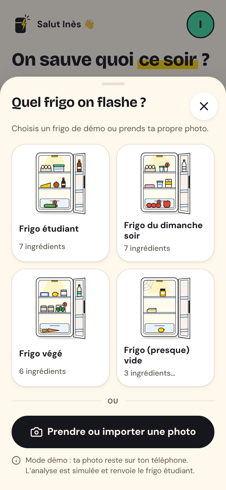
1
Flashe ton frigo
Zéro saisie : une photo suffit.
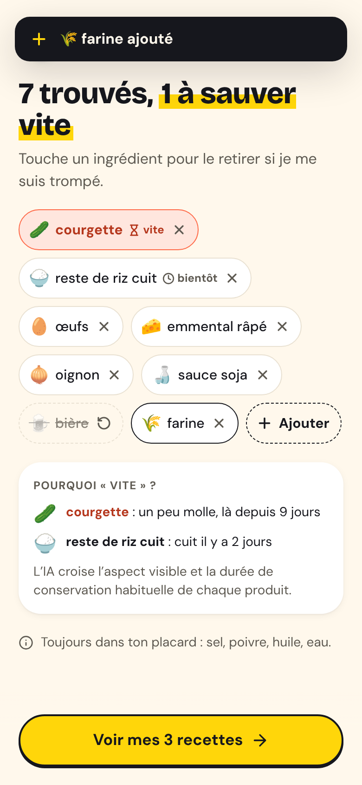
2
L'IA repère l'urgent
Ingrédients reconnus, « à manger vite » signalé, correction en 1 tap.
3
3 recettes anti-gaspi
Au moins une faisable à 100 %, classées par ce qu'elles sauvent.
Le parcours d'Inès · moins de 60 secondes
De la flemme à la fierté.
1
2
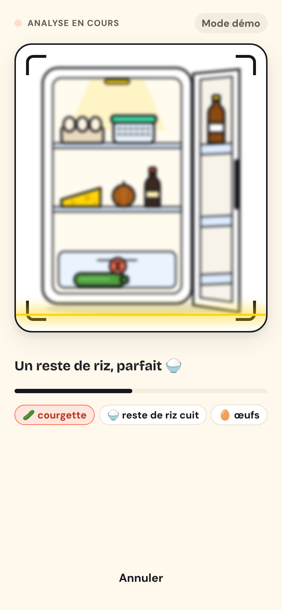
3
4
5
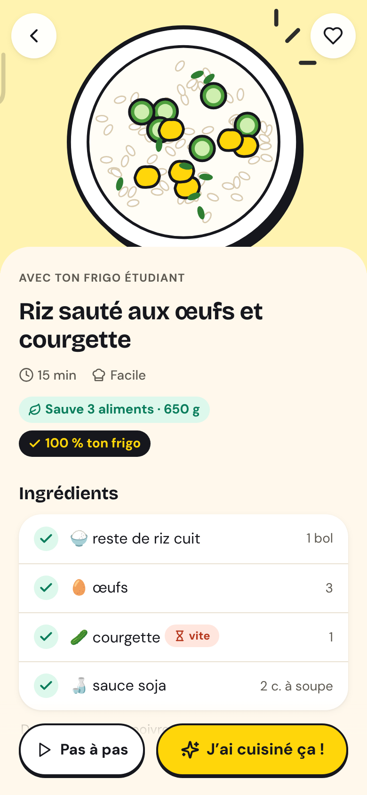
6
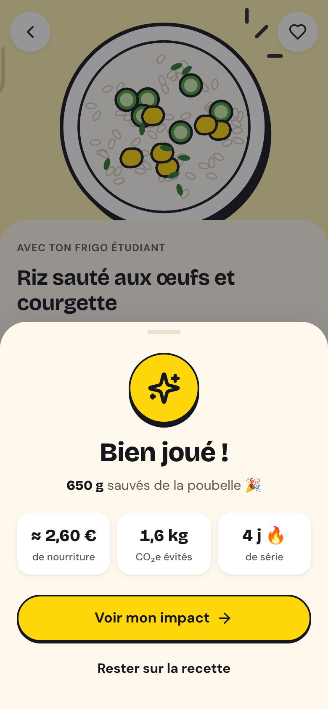
7
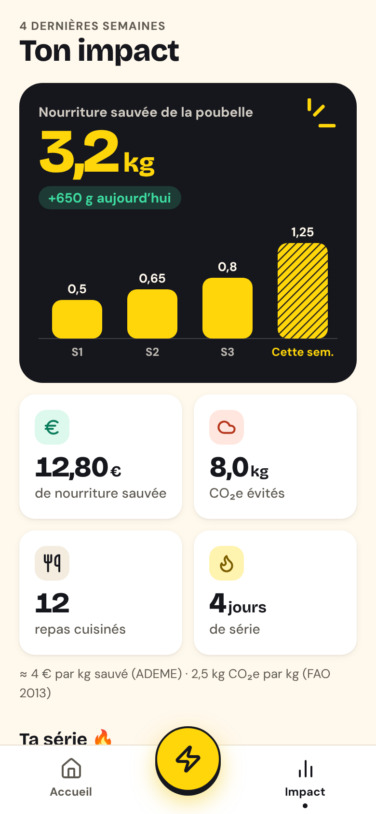
Accueil « On sauve quoi ce soir ? »
Analyse ≈ 3 s, scan animé
Ingrédients − bière, + farine
3 idées « 0 courses »
Fiche Riz sauté, 15 min
Bien joué ! +650 g sauvés
Impact 3,2 kg ce mois
Moment de vérité n° 1 · ingrédients et recettes
Comment l'app sait ce qui va périmer ?
Une photo ne montre pas les dates. FrigoFlash croise quatre signaux :
L'aspect visible : courgette molle, salade qui fane
La durée de vie type : yaourt, viande hachée, herbes
Ta correction en 1 tap si l'IA se trompe
La mémoire du frigo entre deux flashs V2
La règle des recettes : au moins 1 sur 3 faisable à 100 % avec ton frigo et ton placard (sel, poivre, huile, eau), les autres avec 1 ingrédient manquant maximum.
Moment de vérité n° 2 · la récompense
On fête ce que tu sauves. Jamais ce que tu jettes.
3,2kg
de nourriture sauvée ce mois
12,80€
de nourriture sauvée (× 4 €/kg)
8,0kg CO₂e
évités (× 2,5 kg CO₂e/kg)
12 · 4j
repas cuisinés · jours de série
Seuls les ingrédients frais ou urgents comptent. Sources : ADEME (100-160 € pour 20-30 kg, soit ≈ 4 €/kg) · FAO 2013 (3,3 Gt CO₂e pour ≈ 1,3 Gt gaspillées).
Robustesse · ce qu'un jury pourrait tester
On a essayé de casser l'app.
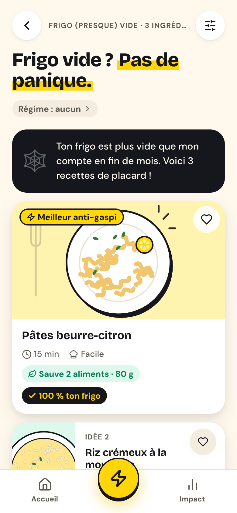
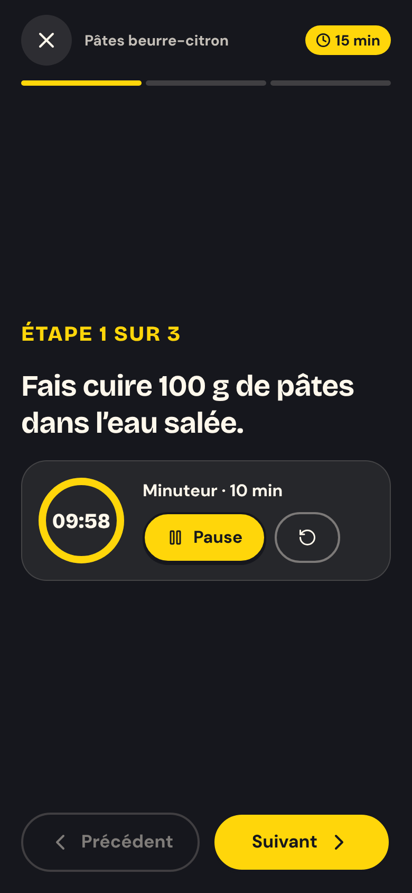
🕸️
Frigo vide
« Plus vide que mon compte en fin de mois » : 3 recettes de placard.
🌱
Régime + allergies
Vegan sans œufs sur le frigo étudiant : 1 recette compatible, et un message clair.
⏱️
Mode pas à pas
Une étape par écran, gros texte, minuteur intégré.
📴
Hors ligne
Double-clic sur le fichier : pas de serveur, pas de clé, pas de Wi-Fi.
Un copain malin qui ouvre ton frigo, pas un écolo moralisateur.
Identité visuelle · DA v1.0
Un frigo, une poignée-éclair, les 3 rayons du flash. Le surligneur jaune sous « Flash » revient partout dans l'app : un seul mot surligné par écran.
Palette
Titres
Aa
Bricolage Grotesque
700-800 · expressive, un peu « fait main », gourmande
On sauve quoi ce soir ?
Texte
Aa
DM Sans
400 · 500 · 700 · très lisible en petit, jamais < 16 px
Coupe la courgette en petits dés. Fais chauffer 1 c. à soupe d'huile.
Illustrations · 16 SVG faits main par l'IA · 41 icônes Lucide
Des frigos qui ont de la personnalité.
Frigo étudiant
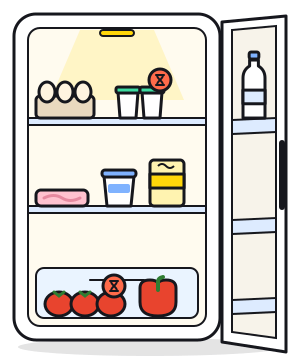
Frigo du dimanche soir
Frigo végé
Frigo (presque) vide
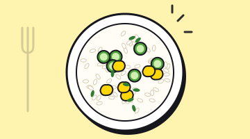
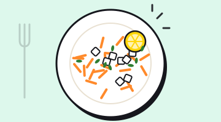
Style flat, contour encre 3 px, couleurs de la palette. Aliments urgents marqués d'une pastille corail avec sablier. Pas de photo, pas de mascotte, pas de cliché écolo (feuille, planète).
Itération · l'œil critique de l'IA
« Ton logo ressemble à une batterie. »
Remarque de l'agent critique sur la DA. Notre réponse : 3 détails qui disent « frigo » au premier coup d'œil.
v1.0 · actuel
se lit « batterie »
v1.1 · proposé
se lit « frigo »
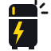
① 2 pieds② une poignée sur la porte du haut③ l'éclair devient la poignée du basrayons du flash conservés
04
04 Le business
Faire payer le confort, jamais la sécurité.
Concurrence, modèle économique et projections (scénarios d'école, pas des promesses).
Concurrence
Seul à combiner zéro saisie et anti‑gaspi.
La reconnaissance d'aliments par photo existe déjà. La nouveauté, c'est la combinaison :
Photo → recettes en un geste, sans frigo à 2 000 €
Anti-gaspi natif : la recette qui sauve le plus
Mémoire du frigo entre deux flashs
Impact visible et ludique
ChatGPT sait répondre. FrigoFlash sait se souvenir.
Business model · freemium
Gratuit pour tous, + pour les accros.
Gratuit
0€
✓ 5 flashs / semaine, 3 recettes par flash
✓ Régime et allergies (végé, vegan, halal, sans gluten, sans lactose)
✓ Favoris et compteur d'impact
On fait payer le confort, pas la sécurité ni les convictions.
FrigoFlash+
4 % des actifs
2,99€/mois
ou 24,99 €/an
Flashs illimités
Filtres temps, budget, niveau, batch cooking
Rappels de péremption, mémoire du frigo
Frigo partagé (coloc, couple)
Revenus complémentaires
Affiliation drive « il te manque juste… » (2-5 %)
Recettes de marques, clairement signalées
Tendances anonymisées (RGPD) pour collectivités
Partenariat Too Good To Go
Coût IA : ≈ 0,002-0,005 € par flash avec un petit modèle vision, soit ≈ 0,02 €/mois par utilisateur.
Projections · scénario d'école
≈ 1 M€ de chiffre d'affaires en année 3.
50 k → 800 k
utilisateurs actifs mensuels (fin A1 → fin A3)
2 000 → 32 000
abonnés FrigoFlash+ (4 %)
≈ 825 k€
marge brute en A3 (CA − coût IA)
CA net de la commission des stores (15 %). Hors salaires et acquisition : c'est une marge brute, pas un bénéfice. Hachures = projection.
Impact objectif : 0,5 kg sauvé / utilisateur / mois
4 800 t de nourriture sauvées en année 3.
Pour une personne, chaque mois
0,5kg
sauvés, soit 20-25 % de son gaspillage
2€
de nourriture (× 4 €/kg, ADEME)
1,25kg
de CO₂e évités (× 2,5, FAO 2013)
Roadmap
Du prototype au campus, puis partout.
Ce qu'on mesurera
< 10 s
de la photo aux recettes (vraie IA)
≥ 30 %
des flashs finissent en « J'ai cuisiné ça ! »
25 % · 12 %
rétention à 7 jours · à 30 jours
3-5 %
conversion vers FrigoFlash+
Lancement : ambassadeurs campus, BDE et CROUS, défis « Semaine zéro gâchis » · vidéos TikTok / Reels (« j'ai flashé le frigo de ma coloc… ») · partenariats associations anti-gaspi.
05
05 Le making-of
Tout a été fait par l'IA.
Analyse, identité visuelle, code et cette présentation. Notre rôle : donner le cap, répondre aux questions, décider.
Making-of · une chaîne d'agents IA
4 agents qui produisent, 1 agent qui critique.
① Analyse
Problème, personas, concurrence, business model, projections, MVP, brief créatif
Ce PDF : 28 slides, graphiques SVG, captures de l'app, notes pour 2 voix
28slides
+ notes de l'oral en PDF
Making-of · l'agent critique
Chaque étape relue comme un jury.
Note de l'agent critique, sur 20
Analyse
KPI de 2 kg/mois, soit presque tout le gaspillage d'une personne → ramené à 0,5 kg. Coût IA et commission des stores oubliés → ajoutés. Régime payant → gratuit.
DA
Zones tactiles de 36-40 px → 44 px. Histogramme incohérent avec la série → corrigé. Bouton « Partager » sans fonction → retiré. Logo « batterie » → v1.1.
Notre part humaine : le brief, 6 réponses de cadrage (techno, IA, équipe, objectif, durée, style) et la validation de chaque étape.
Un flash. Trois recettes. Zéro gâchis.
Merci ! Des questions ?
Un vrai problème : 20-30 kg jetés par personne et par an
Une réponse en un geste : une photo, 3 recettes
Une app qui marche, hors ligne, aujourd'hui
100 % produit par l'IA, relu par l'IA, piloté par nous
Annexe · sources et méthode
D'où viennent nos chiffres
Chiffre
Source
10 Mt gaspillées / an en France, ≈ 16 Md€
ADEME, étude 2016
20-30 kg comestibles / pers. / an, dont ≈ 7 kg emballés
ADEME, ministère de l'Agriculture (« Ça suffit le gâchis »)
100-160 € / pers. / an (≈ 4 €/kg)
ADEME
79 kg / hab. / an (avec parties non comestibles)
ONU, Food Waste Index 2024
1/3 de la nourriture perdue ou gaspillée
FAO, 2011
8-10 % des émissions mondiales de GES
PNUE, Food Waste Index 2021 et 2024
2,5 kg CO₂e par kg gaspillé
FAO 2013 (3,3 Gt CO₂e / ≈ 1,3 Gt)
Hypothèse
Valeur
Conversion vers FrigoFlash+
4 % des actifs (souvent 2-5 %)
Commission des stores
15 % (programme petites entreprises)
Coût IA par flash (petit modèle vision)
0,002-0,005 €
Flashs par utilisateur actif
6 / mois
Nourriture sauvée
0,5 kg / utilisateur / mois
Projections fictives, présentées comme des scénarios d'école. Abonnés comptés sur toute l'année (hypothèse optimiste). Dans l'app, seuls les ingrédients frais ou urgents comptent dans les kg sauvés. Le prototype fonctionne en mode démo : l'analyse est simulée, au format JSON qu'enverrait un vrai modèle vision.